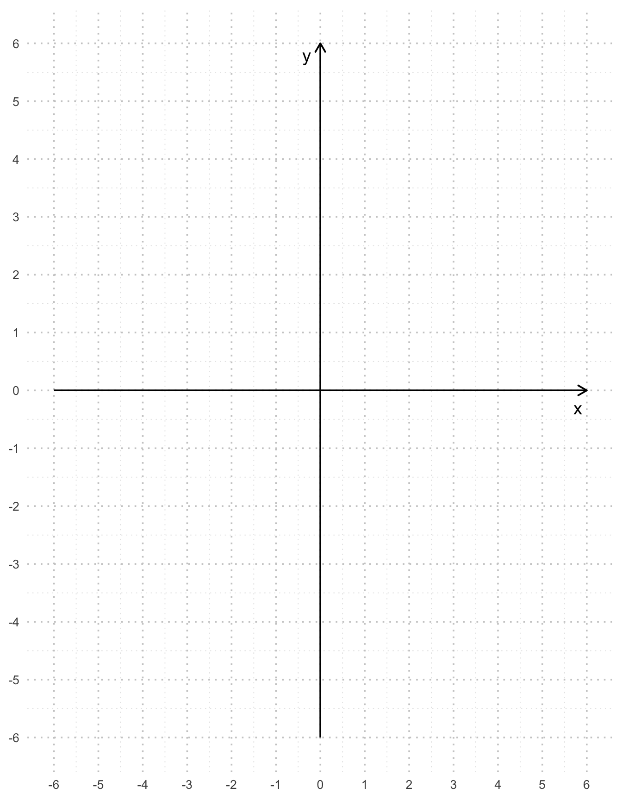
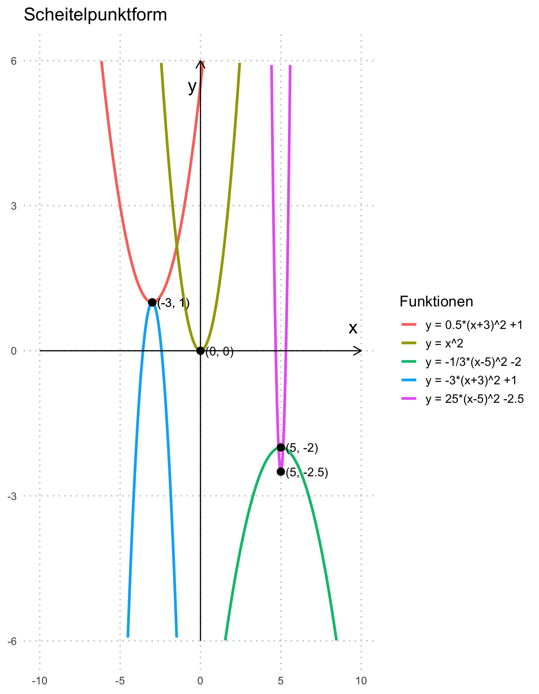
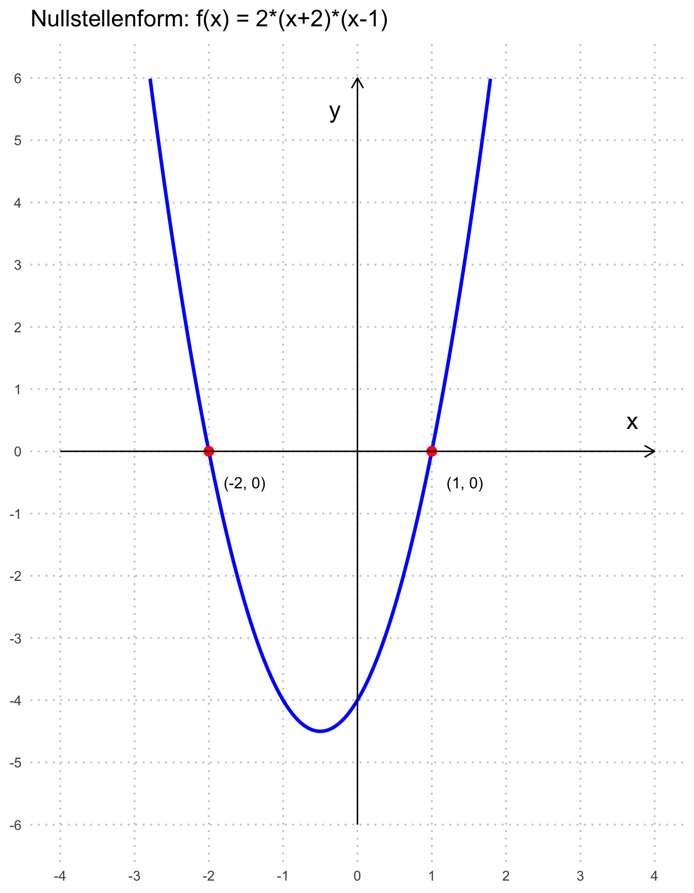

flowchart LR
%% Definitionsmenge
subgraph Definitionsmenge
A["Ford Mustang"]
B["VW Beetle"]
C["Yamaha MT07"]
D["Ford Fiesta"]
end
%% Zielmenge
subgraph Zielmenge
E[Ladina]
F[Lennox]
G[Jasmin]
H[Milo]
end
%% Beziehungen (Funktionen)
A --> F
B --> G
C --> F
D --> E
1 Quadratische Funktionen
1.1 Lernziele
Siehe pdf in Teams und OneNote (vom 17.9.25).
1.2 Wiederholung Funktionen
1.2.1 Was ist eine Funktion?
Eine Funktion ordnet jedem Element einer Menge genau ein Element einer anderen Menge zu. In der Mathematik bedeutet das: jedes Element der Definitionsmenge bekommt genau ein Bild in der Zielmenge zugewiesen.
In folgendem Beispiel stellen wir uns vor, dass eine Garage vier Fahrzeuge anbietet – jedes Fahrzeug wird genau einer Person zugewiesen:
In diesem Fall bekommt:
- Ladina ein Fahrzeug,
- Lennox zwei Fahrzeuge,
- Jasmin ein Fahrzeug,
- Milo bekommt keines.
Das ist in Ordnung für eine Funktion – denn jedes Fahrzeug wurde genau einer Person zugeordnet. Es ist jedoch nicht erlaubt, dass ein Fahrzeug an zwei Personen geht – denn dann würde ein Element der Definitionsmenge mehrere Zielwerte haben.
Zusammengefasst:
- Die Definitionsmenge umfasst alle ‘möglichen Eingabewerte’ (hier: die Autos).
- Die Zielmenge umfasst alle ‘möglichen Ausgabewerte’ (hier: die Personen).
- Eine Funktion weist jedem Element der Definitionsmenge genau ein Ziel zu – egal, ob sich dabei ein Zielwert mehrfach wiederholt oder nicht.
Stellen sie sich das mit einem Beispiel aus der Physik vor: Sie laufen eine Strecke und haben dabei immer die selbe Geschwindigkeit von exakt \(1\frac{m}{s}\). Betrachten sie die Strecke, welche sie in einer gewissen Zeit zurücklegen, werden sie feststellen, dass jeder Milimeter ihres Weges einer Zeit zugeordnet werden kann. Nach \(1\) Sekunde befinden sie sich \(1\) Meter vom Start entfernt. Nach \(2\) Sekunden \(2\) Meter entfernt vom Start etc. Es wird allerdings nie vorkommen, dass sie nach z.B. \(10\) Sekunden sowohl \(10\) Meter, als auch \(5\) Meter vom Start entfernt sind - sie können sich nicht an \(2\) Orten zur selben Zeit befinden! (In diesem Beispiel handelt es sich übrigens um eine lineare Funktion).
Was hingegen möglich ist, sind \(2\) Positionen zu verschiedenen Zeiten: Entscheiden sie sich nach \(20\) Sekunden spontan umzukehren, befinden sie sich sowohl nach \(10\) Sekunden, als auch nach \(30\) Sekunden \(10\) Meter vom Start entfernt.
Hier ist das graphisch dargestellt:

1.2.2 Definitions- und Wertebereiche
Was sind denn nun ein Definitions- oder Wertebereich? Beginnen wir mit dem Definitionsbereich:
Nehmen wir das Beispiel mit der gelaufenen Strecke in abhängigkeit der Zeit von voher. Der Definitionsbereich entspricht der Zeit. Die Zeit kann in beliebig kurzen Einheiten gemessen werden. Unsere Funktion umfasst Werte zwischen \(0\) und \(40\). Es gilt: \[ D = [0, 40] \subset \mathbb{R} \]
Achtung: Verwechseln die den Definitionsbereich nicht mit dem Wertebereich!
In unserem Beispiel laufen wir bei \(0\) Meter los und kehren nach 20 Metern wieder um. Somit umfasst unser Wertebereich nur Zahlen von \(0\) bis \(20\). Es gilt: \[ W = [0, 20] \subset \mathbb{R} \]
Nun, hier handelt es sich um ein Beispiel aus der Physik. Hier im Mathematikunterricht haben sie durchwegs definierte Funktionen kennengelernt, nämlich die lineare Funktion
1.2.3 Lineare Funktion
Sie erinnern sich: wir können eine Funktion als Menge von Tupeln beschreiben \[ F=\{(x,y=f(x) | x\in D \wedge y\in W)\} \]
Betrachten wir folgende Funktion:
\[ f: \mathbb{R} \longrightarrow \mathbb{R} \] \[ x \longmapsto y=x \]
So lautet die Funktion als Menge von Tupeln: \[ F=\{(-2,-2), (0,0), (1,1), ...\} \]
Wir können diese lineare Funktion auch in der expliziten Form beschreiben
In folgendem Koordinatensystem ist eine lineare Funktion \(f(x)\) eingezeichnet. Die Steigung \(m\) der Funktion berechnet sich gemäss dem Steigungsdreieck (rot eingezeichnet):
\[ m=\frac{\Delta y}{\Delta x} = \frac{y_2 - y_1}{x_2 - x_1} \]
Den Parameter \(b\) können wir ganz einfach ablesen, nämlich da, wo der Graph die y-Achse bei \(0\) Schneidet.

Beispiel Funktionsgleichung
Berechnen sie die Funktionsgleichung \(f(x)\).
Lösung:
\[f(x) = 1.5 \cdot x + 0.5\]
Beispiel Definitions- und Wertebereich
Was ist der Definitions- und Wertebereich der Funktion \(f(x)\)?
Lösung:
- \(D= \mathbb{R}\)
- \(W= \mathbb{R}\)
1.3 Einleitung
Nun haben wir die lineare Funktion kennengelernt. Wozu benötigen wir denn noch mehr? Nun, leider sind die wenigsten physikalische Probleme lineare Probleme. Etwas zynisch gesprochen könnte man gar sagen: die Natur ist nicht linear! Stellen sie sich vor, sie werfen einen Ball in die Luft. Was denken Sie: fliegt der Ball gerade nach oben und dann plötzlich senkrecht runter? Erfahrungsgemäss wird der Ball im Flug immer langsamer, bis er seinen höchsten Punkt erreicht und er dann wieder zum Boden beschleunigt. Betrachten wir ein Höhen-Zeit-Diagram wird klar: Es gibt keinen abrupten Richtungswechsel, sondern eine immer flacher werdende Kurve, bis sie das maximum erreicht hat.

Offensichtlich handelt es sich hier nicht um einen linearen Verlauf. Wir sprechen in diesem Beispiel von einer Parabel, bzw. von einer quadratischen Funktion.
Genau so verhält es sich auch beim Freifall: Springen sie von einem 3m Sprungturm ins Wasser werden sie durch die Gravitation beschleunigt, bis sie auf der Wasseroberfläche ankommen. Sie haben nicht direkt nach dem Absprung die Endgeschwindigkeit des Freifalls (~200km/h) - das wäre eine überaus seltsame Welt.
Sollten Sie sich nicht sicher sein wie hoch der Sprungturm ist und ihr:e Kolleg:in ist genug mutig um vor ihnen zu springen, können sie in einem ersten Schritt die Zeit vom Absprung bis zum auftreffen auf der Wasseroberfläche stoppen. (In der Physik werden sie das Beispiel bestimmt genauer behandeln). Annähern kann man die Fallhöhe mit der Formel \[ s(t) = 5\cdot t^2 \] Dabei entsprechen die Fallhöhe in Meter \(s\) und die Zeit in Sekunden bis zum Aufprall \(t\).
Beispiel Fallhöhe
Berechnen Sie die Höhe des Sprungturms aus folgendem Video (2:28min bis 2:44min)
Berechnen Sie zusätzlich die Höhe eines Sprungturms für \(t=1s\) und \(t=5s\). Fällt ihnen dabei etwas auf?
Lösung:
Der Freifall dauert ca. 3 Sekunden. Mit \(t=3s\) ergibt sich: \(s(3) = 5\cdot 3^2 = 45m\)
Für eine Funktion kann man eine Wertetabelle erstellen, oder in einem Koordinatensystem einen Funktionsgraphen zeichnen.
Beispiel Freifall
Erstellen sie eine Wertetabelle zur Funktion \(s(t) = 5\cdot t^2\) und zeichnen sie den entsprechenden Graphen ins Koordinatensystem. Überlegen sie, wie sie die einzelnen Punkte sinnvoll im Koordinatensystem verbinden können. Verwenden sie auch negative Werte für \(t\) (obwohl negative Zeitwerte für die Flugzeit natürlich nicht möglich sind).
| \(t_1\) | \(t_2\) | \(t_3\) | \(t_4\) | \(t_5\) | \(t_6\) | \(t_7\) | \(t_8\) | \(t_9\) | \(t_{10}\) | |
|---|---|---|---|---|---|---|---|---|---|---|
| \(t\) | ||||||||||
| \(s(t)\) |
1.4 Rein quadratische Funktionen
Den Ausdruck \(s(t)=5\cdot t^2\) nennt man eine rein quadratische Funktion.
Beispiel rein quadratische Funktion
Zeichnen Sie alle untenstehende rein quadtratische Funktionen ins selbe Koordinatensystem und beantworten sie anschliessend die Fragen.
| \(y=3x^2\) | \(y=-0.1x^2\) | \(y=-2.5x^2\) | \(y=-0.8x^2\) |
|---|---|---|---|
| \(y=-x^2\) | \(y=\frac{2}{5}x^2\) | \(y=1.2x^2\) | \(y=10x^2\) |
Sehen sie eine regelmässigkeit bei den Nullstellen (Schnittpunkt mit der \(x\)-Achse) der rein quatratischen Funktion? Begründen Sie Ihre Antwort mit der allgemeinen Form \(y=ax^2\)
Wie beeinflusst das Vorzeichen von a die Form der Parabel?
Die Parabel der Funktion \(f(x)=x^2\) (also mit \(a=1\)) nennt man Normalparabel. Wie verändert sich die Form der Parabel, wenn der Betrag von \(a\) grösser, bzw. kleiner als \(1\) ist im Vergleich zur Normalparabel?
Lösung:

- Der Scheitelpunkt liegt immer bei \(S(0|0)\)
- Für \(a>0\) ist die Parabel nach oben, für \(a<0\) nach unten geöffnet.
- Es gilt für \(|a|>1\): Parabel wird schmaler / steiler und für \(0<|a|<1\): die Parabel wird breiter / flacher
In folgendem Fenster können sie interaktiv die rein quadratische Funktion und zur auffrischung auch die lineare Funktion erkunden:
Interaktiv: ‘Rein quadratische Funktion’ vs. ‘Lineare Funktion’
Oben gefundene Eigenschaften lassen sich wie folgt zusammenfassen:
Beispiel Graph zeichnen
Zeichnen Sie die Graphen der folgenden Funktionen in ein Koordinatensystem, ohne Wertetabelle:
| \(f(x)=x^2\) | \(g(x)=-2x^2\) | \(h(x)=\frac{1}{3}x^2\) |
|---|---|---|

Beispiel Punkte auf Parabel
Liegen die Punkte \(P(5|10)\) und \(Q(-2|-\frac{8}{5})\) auf der Parabel mit der Gleichung \[ f(x)=\frac{2}{5}x^2 \]
Begründen sie ihre Antwort.
Beispiel Funktionsgleichung bestimmen
Im Koordinatensystem sind zwei Parabeln der Form \(y=ax^2\) abgebildet. Bestimmen sie mit Hilfe der Punkte \(P=(2|12)\) und \(Q=(-2|-1.2)\) die Funktionsgleichung der Parabeln.

Aufgaben lösen
Lösen sie die Aufgaben zum Thema Rein quadratische Funktion 1
1.5 Formen der quadratischen Funktion
Die quadratische Funktion lässt sich in 3 verschiedenen Formen schreiben, jede hat ihre eigenen Eigenschaften und Vor- sowie Nachteile.
1.5.1 Allgemeine quadratische Form (Scheitelpunktform)
Wir erinnern uns, die Form der linearen Funktion lautet \[ y=mx+b \] Mit variation von \(m\) und \(b\) können wir die Kurve beliebig im Koordinatensystem platzieren.
Nun haben wir die rein quadratische Funktion kennengelernt: \[ y= ax^2 \] Mit variation von \(a\) verändern wir die Öffnung der Parabel, aber haben keine Werkzeuge, um die Parabel “frei” im Raum zu platzieren. Der Scheitelpunkt der rein quadratischen Funktion liegt immer im Koordinatenursprung \((0|0)\).
Zunächst werden wir folgende quadratische Funktionen mit dem Streckfaktor \(a=1\) betrachten.
Beispiel: Scheitelpunkt auf der y-Achse
Zeichnen sie die folgenden Parabeln ins selbe Koordinatensystem und beantworten sie anschliessend die Fragen.
- \(y=x^2+3\)
- \(y=x^2\)
- \(y=x^2-5\)
- \(y=x^2-1.5\)
- \(y=x^2+6.5\)
Notieren Sie die Funktionsgleichung einer Parabel mit Scheitelpunkt \(S(0|5)\) und einer mit Scheitelpunkt \(S(0|-3.5)\)
Wo liegt der Scheitelpunkt einer Parabel mit Funktionsgleichung \(y = x^2+v\), wenn sich \(v\) ändert? Betrachten Sie die Fälle \(v = 0\), \(v < 0\) und \(v > 0\).
Lösungen
Beispiel: Scheitelpunkt auf der x-Achse
Zeichnen sie die folgenden Parabeln ins selbe Koordinatensystem und beantworten sie anschliessend die Fragen.
- \(y=(x+3)^2\)
- \(y=x^2\)
- \(y=(x-5)^2\)
- \(y=(x-1.5)^2\)
- \(y=(x+6.5)^2\)
Notieren Sie die Funktionsgleichung einer Parabel mit Scheitelpunkt \(S(7|0)\) und einer mit Scheitelpunkt \(S(-3.5|0)\)
Wo liegt der Scheitelpunkt einer Parabel mit Funktionsgleichung \(y = (x-u)^2\), wenn sich \(u\) ändert? Betrachten Sie die Fälle \(u=0\), \(u<0\) und \(u>0\).
Lösungen

Beispiel: Allgemeiner Scheitelpunkt
Zeichnen sie die folgenden Parabeln ins selbe Koordinatensystem und beantworten sie anschliessend die Fragen.
- \(y=(x+3)^2 +1\)
- \(y=x^2\)
- \(y=(x-5)^2 +3\)
- \(y=(x-1.5)^2 -2.5\)
- \(y=(x+6.5)^2 -3.5\)
Notieren Sie die Funktionsgleichung einer Parabel mit Scheitelpunkt \(S(5|-2)\) und einer mit Scheitelpunkt \(S(-3.5|6)\)
Wo liegt der Scheitelpunkt einer Parabel mit Funktionsgleichung \(y = (x-u)^2 + v\), wenn sich \(u\) und \(v\) ändern? Betrachten Sie die Fälle \(u,v=0\), \(u,v<0\) und \(u,v>0\).
Lösungen

Beispiel: Streckung der Parabel
Zeichnen sie die folgenden Parabeln ins selbe Koordinatensystem und beantworten sie anschliessend die Fragen.
- \(y=0.5(x+3)^2 +1\)
- \(y=x^2\)
- \(y=-\frac{1}{3}(x-5)^2 -2\)
- \(y=-3(x+3)^2 +1\)
- \(y=25(x-5)^2 -2.5\)
Notieren Sie die Funktionsgleichung einer Parabel mit Scheitelpunkt \(S(-2|4)\), die in \(y\)-Richtung um Faktor 2 gestreckt wurde.
Welchen Einfluss hat der Streckfaktor bei allgemeinen quadratischen Funktionen (Vorzeichen, Betrag \(>1\) / \(<1\))
Die allgemeine quadratische Funktion hat die Funktionsgleichung \(y=a(x-u)^2 +v\). Erläutern Sie, welchen Einfluss die einzelnen Parameter \(a,u,v\) auf die Lage und Form der Parabel haben.
Lösungen

Verschiebt man eine Parabel mit der Gleichung \(y=ax^2\) um \(u\) Einheiten parallel zur \(x\)-Achse und um \(v\) Einheiten parallel zur \(y\)-Achse, so erhält man eine Parabel mit der Gleichung \[ y=a(x-u)^2+v \] und Scheitelpunkt \[ S(u|v) \]
Bemerkung
Diese Form der Funktionsgleichung, bei welcher man den Scheitelpunkt direkt ablesen kann, nennt man Scheitelpunktform.
Interaktiv: Allgemeine quadratische Funktion
Aufgaben lösen
Lösen sie die Aufgaben zum Thema Allgemeine quadratische Funktion 2.1
1.5.2 Allgemeine quadratische Form (Nullstellenform)
Eine weitere nützliche Form der quadratischen Funktion ist die Nullstellenform. Wie es der Name bereits sagt, könnnen wir in dieser Form die Nullstellen (als die Schnittpunkte mit der x-Achse) direkt ablesen.
Auch hier ist \(a\) der Streckfaktor.
Die Nullstellen sind direkt als \(x_1\), bzw. \(x_2\) abzulesen.
Warum?
Berechnen wir die Nullstelle, möchten wir die Funktion Null setzen:
\[ 0 = a\cdot (x - x_1)\cdot (x - x_2) \]
Wir wissen, ein Produkt ist \(=0\), sobald mindestens einer der Faktoren \(=0\) ist.
Betrachten wir die Funktion \(f(x) = 2\cdot (x + 2) \cdot (x-1)\), so liegen die Nullstellen dieser Funktion auf den Punkten \(P_1(-2|0)\) und \(P_1(1|0)\).
Wir setzen fürs ablesen die Faktoren \(=0\).
\[ x+2 = 0 \rightarrow x = -2 \]
und
\[ x-1 = 0 \rightarrow x = 1 \]
Scheitelpunkt
Nun haben wir die Nullstellen bestimmt. Um die Funktion zeichnen zu können, müssen wir auch den Scheitelpunkt bestimmen. Wir wissen: der Scheitelpunkt muss auf der x-Achse genau zwischen den beiden Nullstellen liegen \(\rightarrow\) die Funktion ist symmetrisch.
Somit berechnen wir: \[ S\left(\left(\frac{x_1 + x_2}{2}\right)|y\right) \]
Setzen wir unsere Nullstellen ein: \[ \frac{-2 + 1}{2} = -\frac{1}{2} \]
Um die Fehlende Koordinate zu bestimmen, setzen wir nun einfach unseren gefundenen Wert für x ein.
\[ f\left(-\frac{1}{2}\right) = 2\cdot \left(-\frac{1}{2} + 2\right)\cdot \left(-\frac{1}{2} - 1\right) = 2\cdot 1.5 \cdot -1.5 = -4.5 \]
Der Scheitelpunkt liegt somit im Punkt \[ P\left(-0.5 | -4.5 \right) \]

Es gibt elegantere Wege, um den Scheitelpunkt zu bestimmen. Dies und weitere Eigenheiten der Nullstellenform betrachten wir später bei den quadratischen Gleichungen.
Aufgaben lösen
Lösen sie die Aufgaben zum Thema Nullstellenform der quadratischen Funktion 2.2
1.5.3 Allgemeine Form der quadratischen Funktion
Wir haben vorhin die Scheitelpunktform und die Nullstellenform der quadratischen Funktion kenenngelernt.
\[ f(x) = a\cdot (x-u)^2 + v \]
\[ f(x) = a\cdot (x-x_1)\cdot (x-x_2) \]
Der Vorteil dieser Form ist es, dass man den Scheitelpunkt, bzw. die Nullstellen direkt ablesen kann. Die Scheielpunktform ist allerdings in den wenigsten Fällen gegeben. Meistens werden Sie die allgemeine Form der quadratischen Funktion antreffen:
In dieser Form kann der Scheitelpunkt nicht mehr direkt abgelesen werden. Aber wie in der rein quadratischen Funktion ist der Parameter \(a\) der Streckfaktor der Funktion.
Interaktiv: allgemeine quadratische Funktion
Beispiel: Scheitelpunktform ablesen
Zeichnen sie folgende Parabeln in ein Koordinatensystem und lesen sie für die Parabeln die Scheitelpunktform ab.
- \(f(x) = x^2 + 4x\)
- \(g(x) = -0.5x^2 - 3x -3.5\)
- \(h(x) = 2x^2 -4x + 5\)
Tip: Es genügt, entweder die x- oder die y-Koordinate des Scheitelpunktes zu kennen. Die andere Koordinate kann man durch einsetzen in die Funktionsgleichung bestimmen.
Herleitung: Scheitelpunkt in der allgemeinen Form
Das Ziel ist es, die allgemeine Form in die Scheitelpunktform umzuwandeln: \[ ax^2 + bx + c \rightarrow a\cdot (x-u)^2 + v \]
1. Allgemeine Form \[ f(x) = ax^2 + bx + c \]
2. Ausklammern von a (Streckfaktor) \[ f(x) = a\cdot \left(x^2 + \frac{b}{a}\cdot x\right) + c \]
3. Quadratische ergänzung Wir möchten nun dem Term \(x^2 + \frac{b}{a}x\) in die Form \((x-u)^2\) bringen. Dazu ergänzen wir quadratisch.
Wir nutzen die Formel: \[ x^2 + px = \left(x+\frac{p}{2}\right)^2 - \left(\frac{p}{2}\right)^2 \]
Herleitung dieser Formel
Wir starten mit dem Ausdruck \(x^2 + px\).
Wir erinnern uns an die zweite binomische Formel:
\[ (x+y)^2 = x^2 + 2xy + y^2 \]
In unserem Ausdruck fehlt aber nun ein Teil. Setzen wir \(2y=p\), dann passt der mittlere Term:
\[ y=\frac{p}{2} \]
Setzen wir \(y\) in die binomische Formel ein, erhalten wir:
\[ \left(x + \frac{p}{2}\right)^2 = x^2 + px + \left(\frac{p}{2}\right)^2 \]
Nun subtrahieren wir auf beiden Seiten \((\frac{p}{2})^2\) erhalten wir:
\[ x^2 + px = \left(x + \frac{p}{2}\right)^2 - \left(\frac{p}{2}\right)^2 \]
Somit gilt: \[ x^2 + \frac{b}{a}x = \left(x+ \frac{b}{2a}\right)^2 - \left(\frac{b}{2a}\right)^2 \]
Wir setzen ein:
\[ f(x) = a \cdot \left[ \left(x+\frac{b}{2a} \right)^2 - \left(\frac{b}{2a} \right)^2\right] + c \]
4. Vereinfachen \[ f(x) = a \cdot \left(x+\frac{b}{2a} \right)^2 - a\cdot \left(\frac{b}{2a} \right)^2 + c \]
\[ - a\cdot \left(\frac{b}{2a} \right)^2 = -\frac{ab^2}{4a^2} = -\frac{b^2}{4a} \]
\[ f(x) = a\cdot \left(x+\frac{b}{2a}\right)^2 + \left(c-\frac{b^2}{4a}\right) \]
Somit gilt: \[ u = -\frac{b}{2a}, \quad v = c - \frac{b^2}{4a} = \frac{4ac - b^2}{4a} \]
Der Scheitelpunkt liegt also bei: \[ S\left(-\frac{b}{2a} \,\middle|\, \frac{4ac - b^2}{4a}\right) \]
Aufgaben lösen
Lösen sie die Aufgaben zum Thema Allgemeine Form der quadratischen Funktion 2.3
1.6 Optimierungsprobleme
Häufige Probleme in der Mathematik (oder im Alltag) sind Probleme, bei denen man herausfinden möchte, wie man unter gewissen Bedingungen einen Wert maximieren/minimieren kann. Wie kann man zum Beispiel bei einer bestimmten Oberfläche das grösstmögliche Volumen erreichen (wenig Verpackung für viel Inhalt). Wir möchten uns nun anschauen wie wir im Fall von Grössen, die durch quadratischeFunktionenbeschriebenwerden,solche Probleme lösen können. Dazu brauchen wir jeweils den Scheitel von Parabeln, da dies der höchste resp. tiefste Punkt der quadratischen Funktion ist.
1.6.1 Einführungsbeispiel
Mit einem \(12m\) langen Zaun soll an einer Hauswand ein Rechteck eingezäunt werden. Wie müssen die Seiten des Rechtecks gewählt werden, damit sein Flächeninhalt möglichst gross wird?
Schritt 1: Verstehen der Aufgabe
- Was ist gegeben? Der Zaun ist 12m lang. An der Hauswand wird kein Zaun benötigt.
- Was ist gesucht? Der Flächeninhalt soll maximal werden.
Schritt 2: Zerlegen in Teilprobleme
- Drücke die Seiten des Rechtecks mit einer einzigen Variable aus (Skizze).
- Stelle eine Gleichung zur Berechnung des Flächeninhalts des Rechtecks auf.
- Bestimme den Scheitel der zur quadratischen Funktion gehörenden Parabel.
Schritt 3: Durchführen eines Plans
Einführen der Variablen: Die Seiten senkrecht zur Hauswand haben Länge \(x\) und diejenige parallel zur Hauswand \(12−2x\).
Aufstellen der Gleichung: Der Flächeninhalt ist das Produkt der zwei unterschiedlich langen Seiten: \[ A(x) = x\cdot (12−2x) = 12x−2x^2 =−2x^2 + 12x \]
Bestimmung des Scheitels: Wir formen die allgemeine Form in die Scheitelpunktform durch quadratisch ergänzen um: \[ A(x) = −2(x^2 − 6x) =−2(x^2 − 6x + 9) + 18 = −2(x−3)^2 + 18 \]
Der Scheitel liegt somit bei \[ S(3|18) \]
Alternativ verwenden wir die Formel für die \(x\)-Koordinate des Scheitelpunkts: \[ S_x =−\frac{b}{2a}=-\frac{12}{2\cdot(-2)} = 3 \]
Die \(y\)-Koordinate finden wir durch einsetzen \(A(3) =−2\cdot3^2 + 12\cdot 3 =−18 + 36 = 18\).
Schritt 4: Überprüfung
- Kann das Ergebnis richtig sein? Die Parabel ist nach unten geöffnet. Der Scheitel ist also der höchste Punkt.
- Interpretation des Ergebnis: Der Scheitel bei \(S(3|18)\) bedeutet, dass für \(x = 3\) die Fläche maximal wird und \(18\) beträgt.
- Antwortsatz: Der Flächeninhalt wird für die Seiten senkrecht zum Haus von \(3m\) und diejenige parallel zum Haus \(6m\) maximal und beträgt \(18m^2\)
1.6.2 Schrittweises Vorgehen
Das Vorgehen lässt sich wie folgt zusammenfassen:
1.6.3 Beispiele
Beispiel: Quadratische Säule optimieren
Die Summe aller Kanten einer quadratischen Säule (Quader mit quadratischer Grundfläche) misst \(24cm\). Berechnen Sie die Kanten so, dass..
- …die Oberfläche maximal wird.
- …die Mantelfläche maximal wird.
Aufgaben lösen
Lösen sie die Aufgaben zum Thema Optimierungsprobleme 3